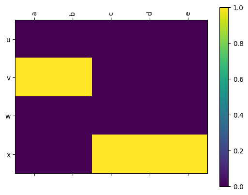
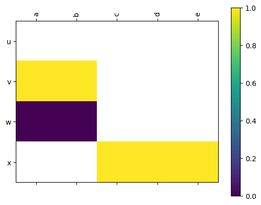

This page contains information for the LabeledMatrix and LabeledBlockMatrix classes which are used heavily inside the cereeberus.distance.Interleaving class.
A class to store a matrix with row and column labels. The matrix is stored as a numpy array, and the row and columns are stored as lists. For example, we could store the 2 x 3 matrix below as a LabeledMatrix.
This class supports matrix multiplication, addition, and subtraction, as well as transposition and getting the maximum (absolute) value of the matrix. Note that calling for an entry in the matrix is done by the labels of the row and column, not the indices. For example, to get the entry in the first row and second column from the example above, you could call either of the following options.
Mat['u','b']Mat.array[0,1]
Visualization can be done with the draw method, which will draw the matrix with the row and column labels.
ValueError – If the other object is not a LabeledMatrix.
ValueError – If the matrix sizes are incompatable, or if they are but the row labels of the first matrix do not match the column labels of the second (including ordering).
A class to store a block matrix with row and column labels. This is built with the assumption that we have a function value for each object in the labels, and we initialize this with a dictionary for rows and columns that sends function value i to a list of row or column labels, respectively.
For example, we could store the block matrix below as a LabeledBlockMatrix. The outside rows give the function values of the vertices, and the inside rows and columns give the labels of the vertices.
1
2
a
b
c
d
e
0
u
0
0
0
0
0
1
v
1
1
0
0
0
w
0
0
0
0
0
2
x
0
0
1
1
1
The matrix is stored as a dictionary of LabeledMatrix objects, where the keys are the function values of the vertices. For example, we could store the block matrix below as a LabeledBlockMatrix
Note that this can either be drawn with entries filled with either 0’s or np.nan.
lbm.draw(colorbar=True)

lbm.draw(filltype='nan',colorbar=True)

This class supports matrix multiplication, addition, and subtraction, as well as transposition and getting the maximum (absolute) value of the matrix. Note that calling for an item returns the i’th block as a LabeledMatrix. So we could get an entry in the matrix by first calling the block number, and then the row and column labels.
Initialize the LabeledBlockMatrix with LabeledMatrix objects for each integer.
rows_dict and cols_dict are dictionaries from integers to lists of row labels and column labels respectively. The keys of the dictionaries are the function values of the vertices.
If map_dict is provided, it is a dictionary from column objects to row objects. The matrix will be filled in with 1s where the column object maps to the row object. If map_dict is None, the matrix will be filled in with random 1s in each column if random_initialize is True. If none of these are provided, the matrix will be filled with zeros.
Parameters:
rows_dict – dict
A dictionary from integers to lists of row labels.
cols_dict – dict
A dictionary from integers to lists of column labels.
map_dict – dict
A dictionary from column objects to row objects.
random_initialize – bool
Whether to randomly initialize the matrix.
labeled_matrix_dict – bool
Whether to initialize the block matrix from a dictionary of LabeledMatrix objects.
seed – int
The seed for the random number generator.
Create a single matrix from provided arrays on the blocks. Modified from scipy.linalg.block_diag to put np.nan in the off-diagonal blocks instead of 0’s.
Parameters:
*arrs – array-like
The arrays to put on the diagonal.
ax (matplotlib.axes.Axes) – The axes to draw the matrix on. If None, the current axes will be used.
colorbar (bool) – Whether to draw a colorbar.
filltype (str) – Either zeros or nan. If zeros, the off-diagonal blocks will be filled with zeros prior to drawing. If nan, the off-diagonal blocks will be filled with np.nan, resulting in them showing up white.
**kwargs – Additional keyword arguments to pass to ax.matshow.